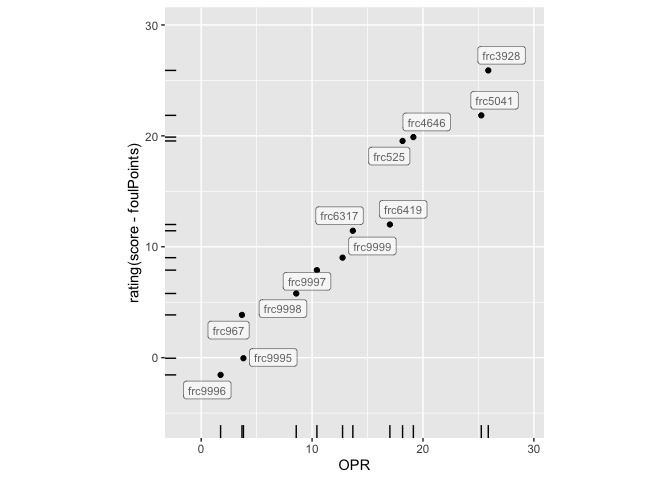

The goal of the tba package is to provide easy access to match data for events run in the first robotics division. Access is based on the Read API v3 of The Blue Alliance.
Installation
You can install the development version of tba from GitHub with:
# install.packages("pak")
pak::pak("heike/tba")In order to access the API of The Blue Alliance, you will need to sign up for a (free) account. Then run
tba::set_api_key(key = "jnn1ZiUfqPuA9UJyV9EVa3jtL5qudBBlYXKPEVQDeQgQgz5L8BypwjTzVKxtCs3W")
# key is not valid, get your own!Example
This is a basic example which shows you how to solve a common problem:
library(tba)
## basic example code
# Team Neutrino has team code `frc3928`
get_records("team/frc3928")
#> # A tibble: 1 × 11
#> city country key name nickname postal_code rookie_year school_name
#> <chr> <chr> <chr> <chr> <chr> <chr> <int> <chr>
#> 1 Ames USA frc3928 Iowa 4-H F… Team Ne… 50011 2012 4-H
#> # ℹ 3 more variables: state_prov <chr>, team_number <int>, website <chr>
# In the 2024 season, the team attended the following events:
events <- get_records("team/frc3928/events/2024")
events$name
#> [1] "Cow Town Throwdown" "Galileo Division"
#> [3] "Iowa Regional" "Clash in the Corn"
#> [5] "Central Missouri Regional"
events$event_code
#> [1] "cttd" "gal" "iacf" "iawes" "mose"Access Score Data from a Competition
The matches from Clash in the Corn can be accessed using the event code 2024iawes:
library(dplyr)
matches <- get_records("event/2024iawes/matches")
count(matches, comp_level)
#> # A tibble: 3 × 2
#> comp_level n
#> <chr> <int>
#> 1 f 2
#> 2 qm 22
#> 3 sf 5
# 22 qualifying matches
# 5 semi-finals
# 2 finalsThe function get_match_details turns the records into a more manageable form by turning the match-based rows from the get_records results into team-based results, i.e. every row corresponds to the detailed scores of each team in each one of the matches:
scores <- get_match_details(matches)
head(scores %>% select(comp_level, match_number, set_number, alliance, team_key, score, ends_with("Points")))
#> # A tibble: 6 × 25
#> comp_level match_number set_number alliance team_key score adjustPoints
#> <chr> <int> <int> <chr> <chr> <int> <int>
#> 1 f 1 1 blue frc9998 38 0
#> 2 f 1 1 blue frc6419 38 0
#> 3 f 1 1 blue frc4646 38 0
#> 4 f 2 1 blue frc9998 44 0
#> 5 f 2 1 blue frc6419 44 0
#> 6 f 2 1 blue frc4646 44 0
#> # ℹ 18 more variables: autoAmpNotePoints <int>, autoLeavePoints <int>,
#> # autoPoints <int>, autoSpeakerNotePoints <int>, autoTotalNotePoints <int>,
#> # endGameHarmonyPoints <int>, endGameNoteInTrapPoints <int>,
#> # endGameOnStagePoints <int>, endGameParkPoints <int>,
#> # endGameSpotLightBonusPoints <int>, endGameTotalStagePoints <int>,
#> # foulPoints <int>, teleopAmpNotePoints <int>, teleopPoints <int>,
#> # teleopSpeakerNoteAmplifiedPoints <int>, teleopSpeakerNotePoints <int>, …Calculate a team’s contribution to an outcome
The function get_ranking_by allows a ranking of each team (not the alliance!) by any numeric variable. It only makes sense to use matches from the qualifying round. The resulting number is an estimate of the team’s contribution to the chosen measurement. When using get_ranking_by with the score from the qualifying matches, the resulting coefficients for the ranking is the Offesnive Power Rating (OPR) - as published on the TBA API under insights.
# ranking by OPR
scores %>% filter(comp_level=="qm") %>%
get_ranking_by(score)
#> # A tibble: 12 × 3
#> team_key n `rating(score)`
#> <chr> <int> <dbl>
#> 1 frc3928 11 24.8
#> 2 frc5041 11 23.8
#> 3 frc4646 11 17.2
#> 4 frc525 11 16.5
#> 5 frc6419 11 15.4
#> 6 frc6317 11 14.3
#> 7 frc9999 11 13.7
#> 8 frc9997 11 9.06
#> 9 frc9998 11 7.14
#> 10 frc9996 11 2.86
#> 11 frc967 11 2.58
#> 12 frc9995 11 2.32It makes sense, to not include points from fouls (assuming that it is hard to make another team foul one’s alliance):
no_fouls <- scores %>% filter(comp_level == "qm") %>%
get_ranking_by(score - foulPoints)
head(no_fouls)
#> # A tibble: 6 × 3
#> team_key n `rating(score - foulPoints)`
#> <chr> <int> <dbl>
#> 1 frc3928 11 23.6
#> 2 frc4646 11 19.4
#> 3 frc5041 11 19.1
#> 4 frc525 11 17.5
#> 5 frc6317 11 12.7
#> 6 frc6419 11 11.9Most of the time, the resulting ranking should be quite similar, but differences in these rankings might give some insight as to whether some teams profitted from being fouled during the qualification round. In this example, most of the rankings stay the same, but the 2nd and the 3rd team switch places: frc5041 seems to have benefitted during the qualifying matches more from their opponents’ fouls than frc4646. Their rating of contribution to the team’s score without counting fouls is quite similar.
scores %>% filter(comp_level=="qm") %>%
get_ranking_by(score-foulPoints)
#> # A tibble: 12 × 3
#> team_key n `rating(score - foulPoints)`
#> <chr> <int> <dbl>
#> 1 frc3928 11 23.6
#> 2 frc4646 11 19.4
#> 3 frc5041 11 19.1
#> 4 frc525 11 17.5
#> 5 frc6317 11 12.7
#> 6 frc6419 11 11.9
#> 7 frc9999 11 10.7
#> 8 frc9997 11 6.37
#> 9 frc9998 11 5.96
#> 10 frc967 11 2.44
#> 11 frc9996 11 -0.409
#> 12 frc9995 11 -2.54Comparing Multiple Outcomes
By comparing the two measures visually we also see, that the big gap between the top two teams and the other teams suggested by the OPR ranking, turns into a group of four teams with a gap to the remaining teams:
library(tidyverse)
library(ggplot2)
# combine the OPR with the ranking not including fouls:
all_points <- scores %>% get_ranking_by(score, score-foulPoints)
all_points %>% ggplot(aes(x = `rating(score)`, y = `rating(score - foulPoints)`)) +
geom_point() + xlab("OPR") +
ggrepel::geom_label_repel(aes(label = team_key), size=3, alpha = 0.6, fill_alpha = 0.8) +
geom_rug(length = unit(0.03, "npc")) +
scale_y_continuous(expand = c(0.2, 0.2)) +
scale_x_continuous(expand = c(0.2, 0.2)) +
coord_equal()
#> Warning in ggrepel::geom_label_repel(aes(label = team_key), size = 3, alpha =
#> 0.6, : Ignoring unknown parameters: `fill_alpha`
Worst fouling team
Any of the details going into the score can be used as outcome measurement. The number of points given to the opponent because of a team’s foul is determined (in the 2024 season) as 5 points for a foul and 2 points for a technical foul. The list below is sorted with worst offenders at the top:
scores %>% filter(comp_level=="qm") %>%
get_ranking_by(2*foulCount+5*techFoulCount)
#> Warning in all(model_data$dependent): coercing argument of type 'double' to
#> logical
#> # A tibble: 12 × 3
#> team_key n `rating(2 * foulCount + 5 * techFoulCount)`
#> <chr> <int> <dbl>
#> 1 frc9998 11 6.06
#> 2 frc9997 11 4.91
#> 3 frc6317 11 2.60
#> 4 frc525 11 2.38
#> 5 frc967 11 2.25
#> 6 frc9995 11 2.22
#> 7 frc3928 11 1.86
#> 8 frc9999 11 1.18
#> 9 frc4646 11 0.917
#> 10 frc9996 11 0.146
#> 11 frc6419 11 0.0238
#> 12 frc5041 11 -1.62